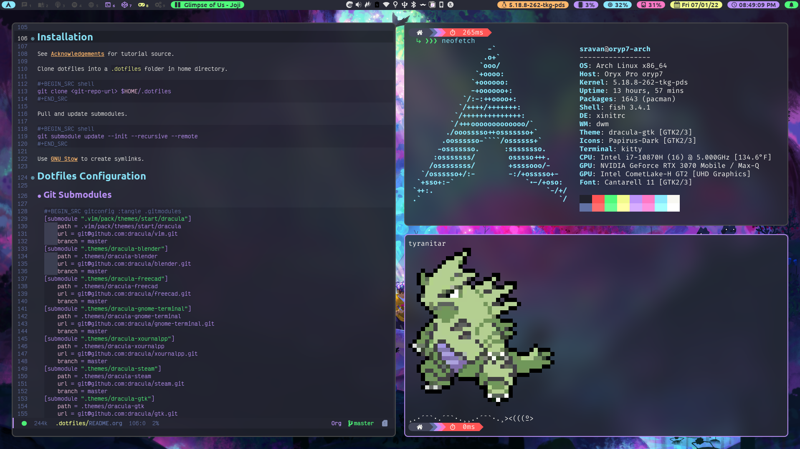

Switching from Windows to Linux
Updated on August 27, 2021

Introduction
Around the summer of 2020, I started experimenting with Linux to see if it could replace Windows as my daily driver operating system. I had a little bit of experience with Red Hat Enterprise Linux and Ubuntu through my Computer Science course work, but I had never really used it as my daily driver desktop / laptop operating system. I really wanted to see if it could handle development, general productivity, and gaming.
Development
Development is definitely where Linux shines because of its superior package management. For example, Ubuntu (and its derivatives) use the apt package manager which allows you to easily install most development packages like Python, gcc, Git, etc. On Windows, you have to go to a website, click on a download link, run an executable, and walk through the steps in an installer. On Linux, it is as simple as a couple terminal commands. There's a reason even Microsoft felt it needed to improve the developer experience on Windows via the Windows Subsystem for Linux.
Productivity
General productivity is no different on Linux than Windows, other than the lack of Microsoft Office and some proprietary software like Adobe's products. This wasn't a big deal for me because there are plenty of free and open-source alternatives as well as web-based options if I ever needed to write documents, create presentations, edit pictures, etc. If you rely on software that only works on Windows for daily productivity work, you might want to look into free and open-source alternatives before switching to Linux.
Gaming
Gaming was really the main concern I had when thinking about moving away from Windows. Luckily, there has been a lot of progress on this front in recent years. Per ProtonDB:
"Proton is a new tool released by Valve Software that has been integrated with Steam Play to make playing Windows games on Linux as simple as hitting the Play button within Steam. Underneath the hood, Proton comprises other popular tools like Wine and DXVK among others that a gamer would otherwise have to install and maintain themselves. This greatly eases the burden for users to switch to Linux without having to learn the underlying systems or losing access to a large part of their library of games. Proton is still in its infancy so support is inconsistent, but regularly improving."
Looking at ProtonDB, a lot of the games I play (mostly single-player) have gold or above ratings, meaning they generally work by just pressing the play button, possibly with a few tweaks. After trying this out myself, I have come to the same conclusion. Gaming on Linux is as good as it has ever been and will only get better, especially after the announcement and release of the Linux powered Steam Deck from Valve. If you play a lot of online multiplayer games, you may need to wait as popular anti-cheat software doesn't currently work through Proton.
Distro Hopping
After trying out a bunch of distros like Ubuntu, Pop!_OS, and Fedora, I eventually landed on Arch Linux. As someone who likes to tinker with their computer a lot, Arch felt like the best option because I could literally build my OS from the ground up. I essentially have complete control over which packages get installed on my system. This means there is a steep learning curve and things can break if you are not careful, but the ArchWiki is possibly the greatest Linux resource I have ever seen. The main reasons I decided on Arch are:
- Rolling Release: I don't have to re-install my OS every 6 months. My system and the kernel get updated through my package manager.
- Package Management: Pacman and AUR helpers (e.g. paru) are by far the best package management solution I have seen in Linux. Pretty much any piece of software you might want to use is available in either the main Arch repos or the AUR. I wanted my packages to be up to date without relying on universal package formats like snap, flatpak, or AppImage. While these are great in that they can run on any Linux distro, they don't integrate into the system as well as I would like. AppImages have to be updated manually and don't integrate well with the desktop experience by default. Flatpaks are sandboxed applications, which means they require manual intervention to access certain parts of the OS. The main issue I found here was with theming. For lots of open source applications, they may not have a snap, flatpak, or AppImage package, but they almost always have an AUR package. This means it is extremely rare to have to manually install any application or program on my system.
- Customizability: Everything on my system was either installed by me or a dependency for something I installed. There is little to no bloatware.
After running Arch on my gaming desktop and ultrabook laptop for around a year, I decided to buy a Linux gaming laptop. I wanted to have one system that I could get work done and play games on. After doing some research, I landed on the System76 Oryx Pro 7 because it is made by a U.S. based company with excellent customer service and has first-class Linux support. System76 also makes Pop!_OS, which I tried for a couple of weeks, but I just had to go back to Arch for the reasons mentioned above. Luckily, the ArchWiki has a page for the System76 Oryx Pro. Unfortunately, I had some issue with NVIDIA's Linux drivers and System76's graphics switching tool on Arch. I was able to resolve the issue by switching to Garuda Linux, which is based on Arch, but provides an easy to use installer and some nice GUI tools for configuring your system. As of the time of writing, I don't see myself switching from Garuda because it provides all the benefits of Arch without the initial hassle of installing the system from scratch.
Desktop Environments
While I was in the process of switching between Linux distros, I was also switching between desktop environments. I was most familiar with GNOME from Ubuntu and Red Hat Enterprise Linux (RHEL), but it felt kind of slow and lacked customizability. This is when I discovered KDE Plasma. Coming from Windows, I was much more comfortable with the look and feel of KDE Plasma. Additionally, it has many (perhaps too many) customizability options. After using this for a while, I eventually ran into some system freezing issues that I didn't expect to see given my hardware and felt that I could go for something a bit more minimal.
Window Managers
This is when I learned about window managers from YouTubers like DistroTube. Desktop environments are generally a combination of a window manager and a bunch of utility programs and pre-installed apps. A standalone window manager just controls where windows show up on your screen and the decorations that appear around them. The most suggested window manager for beginners is generally i3. This is a tiling window manager with a configuration file that is written in an easy to use syntax. I tried i3 for a while, but it never really stuck, so I went back to KDE Plasma. After doing some more research, I eventually landed on dwm. Given my experience with C/C++, this seemed like a better window manager for my needs. One of the main downsides of dwm is that it is meant to be super minimal where features you might expect to see need to be added through patches. The process of patching can be slow, annoying, and prone to error. One solution, that I ended up going with, is to use dwm-flexipatch. This includes a bunch of commonly used patches that can be enabled or disabled very easily. You can see my configuration of dwm-flexipatch on GitHub.
Current Setup
My current setup involves these main components:
- Window Manager: dwm-flexipatch
- Status Bar: polybar
- Terminal: kitty
- Color Theme: Dracula / Dracula Pro
- Application Launcher: Rofi
